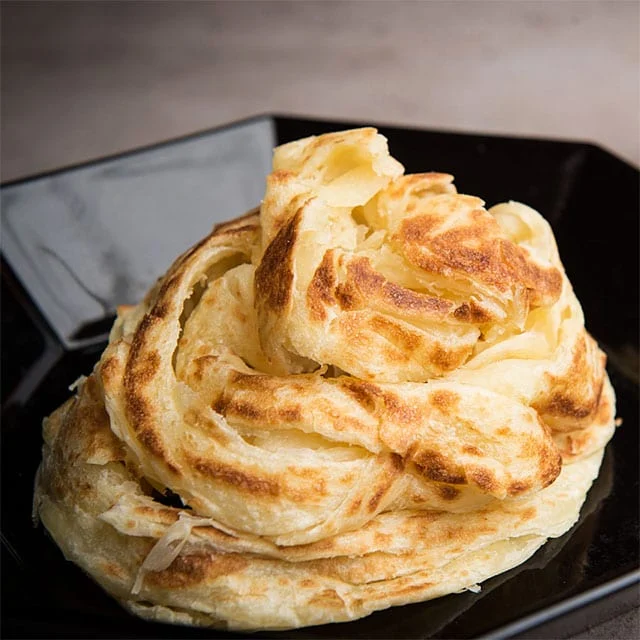

Roti Canai
Roti Canai is a popular Malaysian flatbread known for its flaky and crispy texture. This versatile dish is made from a simple dough of flour, water, and fat, which is skillfully stretched and folded to create its signature layers. It can be enjoyed plain or filled with various ingredients such as egg, onion, or even cheese. Roti Canai is typically served with a side of dhal (lentil curry) or other curries for dipping, making it a delightful breakfast or snack option.

| Recipe Details |
| Portion |
4 servings |
| Preparation Time |
20 minutes |
| Cooking Time |
10 minutes |
| Difficulty |
Medium |
| Cuisine |
Malaysian |
| Taste Profile |
Savory, slightly sweet, with a hint of smokiness |
| Serving Suggestions |
Best served hot |
| Nutrition Facts (per serving) |
| Calories |
450 kcal |
| Fat |
18g |
| Saturated Fat |
5g |
| Carbohydrates |
52g |
| Sugar |
4g |
| Protein |
20g |
| Sodium |
900mg |
| Ingredients |
Measurement |
| Plain flour |
500 gr |
| Salt |
1 tsp |
| Sugar |
1 tsp |
| Water |
1 cup |
| Condensed milk |
2 tbsp |
| Margarine |
2 tbsp |
| Egg |
1/2 |
| Vegetable oil |
extra for frying |
Instructions:
- In a mixing bowl, combine the flour, salt, and sugar. Add the water, condensed milk, margarine, and egg, stirring until well combined.
- Knead the dough on a lightly floured surface until smooth and elastic, about 10 minutes. Divide the dough into 10 equal portions and shape each into a ball.
- Coat each dough ball lightly with margarine, place them in a covered bowl, and let them rest at room temperature for at least 4 hours or overnight.
- On a greased surface, flatten each dough ball and stretch it thinly into a large circle (approximately 60-70 cm in diameter). Fold the dough over itself in thirds, then coil it into a spiral.
- Heat vegetable oil in a pan over medium heat. Fry each roti until golden brown and crispy on both sides, about 3-4 minutes per side.
- After frying, place the roti on a plate and gently press the edges to fluff it up and reveal the layers. Serve hot with your favorite curry for dipping.